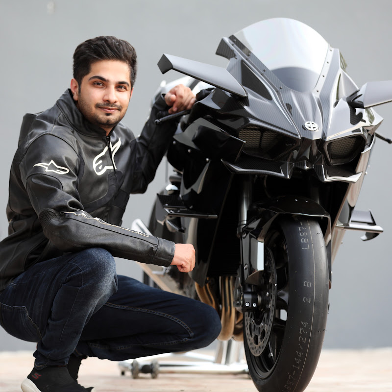
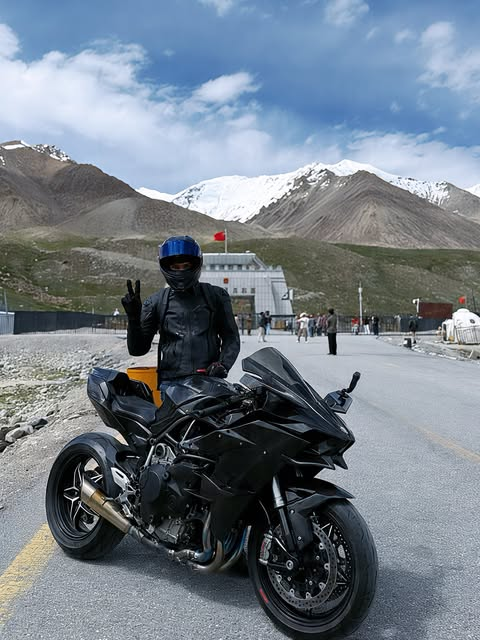
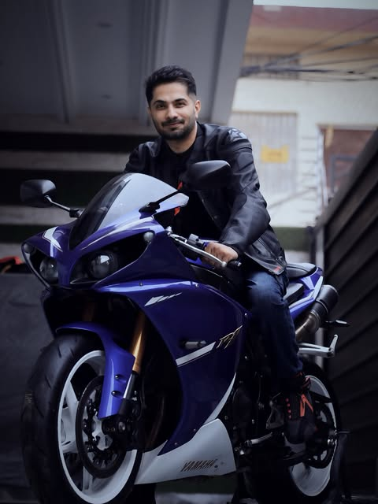
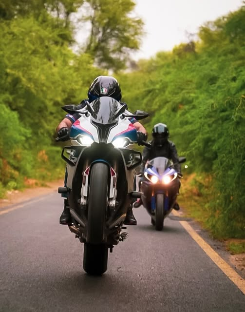
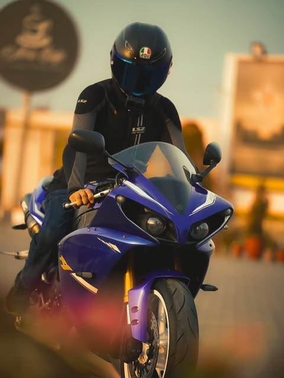
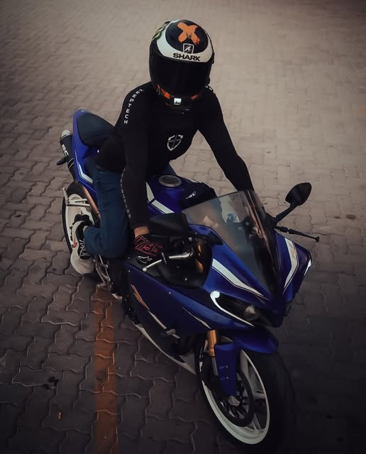
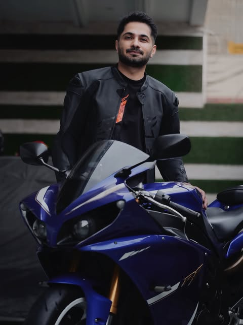
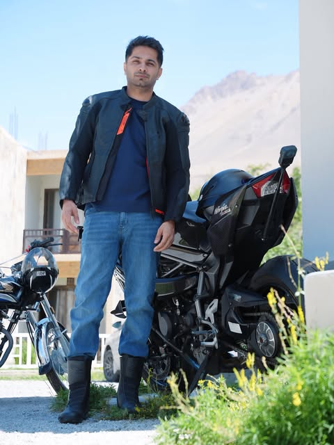

Dr. Zeeshan
Shabbir
From Medicine → Motorsports
An MBBS doctor who has served his hometown of Bahawalpur for over a decade, and the rider who brought the Kawasaki H2R into Pakistan's bike culture. Known to millions as ZS MotoVlogs.
Managed by

25 mm/s · 10 mm/mV
Clinical Notes
TRIG'DCH1 · Medicine · the day job that never stopped
After completing his MBBS, Dr. Zeeshan has practised in his hometown of Bahawalpur for over a decade. The discipline of medicine (precision, calm under pressure, respect for risk) is the same discipline he takes to the road.
CH2 · Motorsports · the record his fans follow
He has explored Pakistan from Gwadar to Khunjerab on superbikes, introduced rare machines like the Kawasaki H2R to the local scene, and built one of the country's largest motovlogging audiences across 585 recordings.
Event Log
TRIG'DEV-01MBBS, Bahawalpur
Qualifies as a doctor and begins clinical practice at home: over a decade serving his hometown, in parallel with everything that follows.
EV-02ZS MotoVlogs begins
The helmet camera goes on. The channel grows to 597K subscribers and 585 videos, with a combined audience in the millions across four platforms.
EV-03The H2R lands in Pakistan
He introduces the Kawasaki Ninja H2R, the world's fastest production superbike, to Pakistan's bike culture, logging a 351 km/h run on camera.
EV-04Gwadar → Khunjerab
Corner to corner of Pakistan on superbikes, culminating in the H2R at Khunjerab Pass, 15,397 ft, the world's highest paved international border crossing.
EV-05International recognition
Featured on the BBC, toured Southeast Asia and the Gulf, and invited twice to the Dakar Rally as a State Guest, representing Pakistan globally.
Exhibits
TRIG'D





